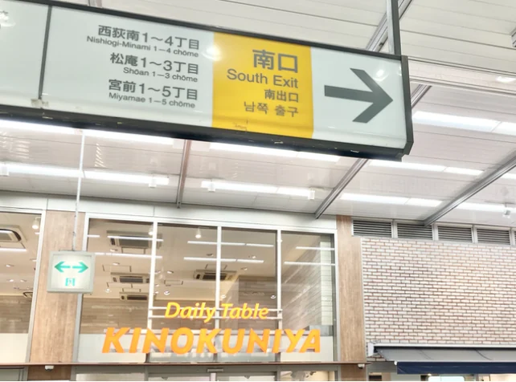
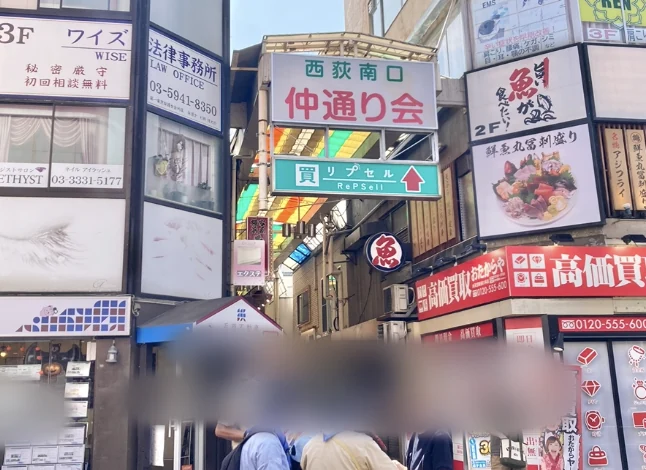
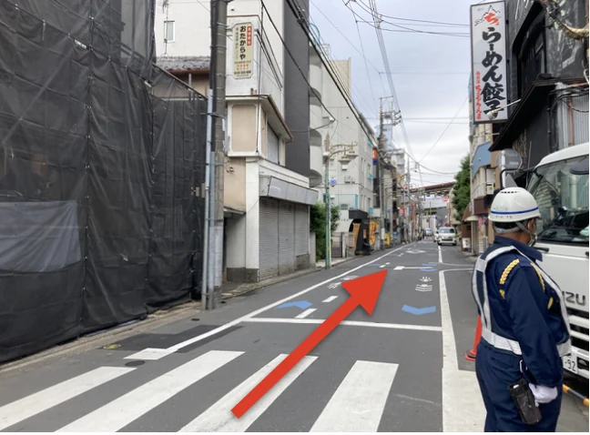
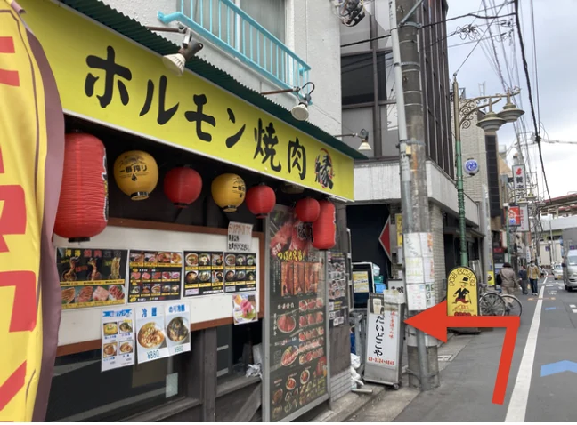
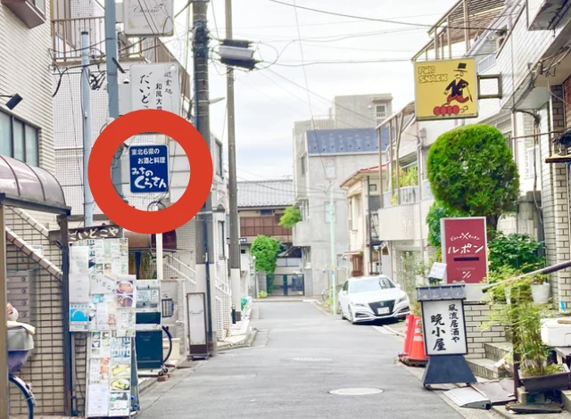
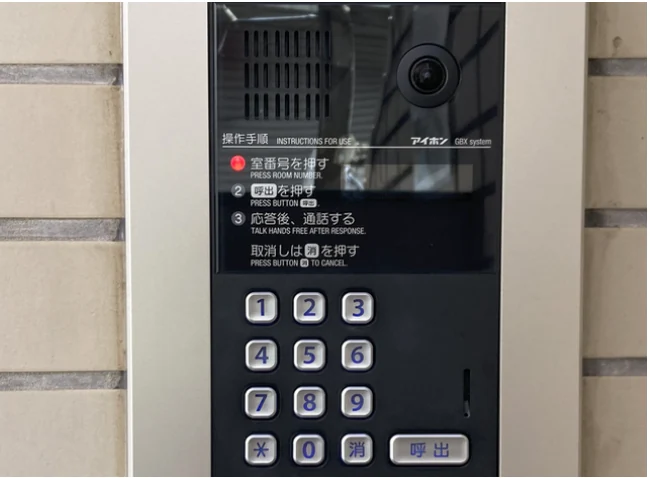
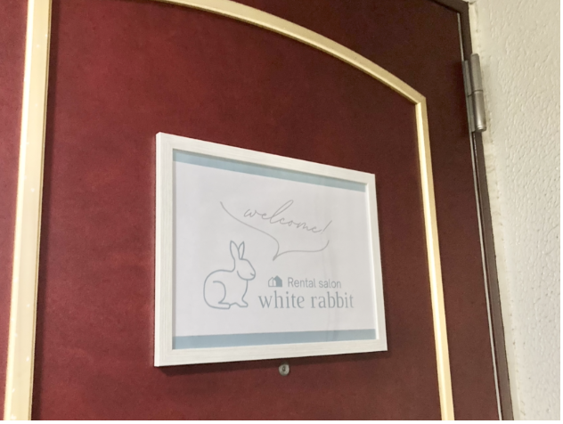

STEP 01
西荻窪駅の南口へ
JR西荻窪駅の南口に出ます。

STEP 02
仲通り会のアーケードへ
南口の目の前にある「仲通り会」のアーケードに進みます。

STEP 03
アーケードを抜けて右折
アーケードを抜けたら右に曲がり、約10メートル直進します。

STEP 04
焼肉店「縁」さんの角を左折
道路左手にあるホルモン焼肉「縁」さんのビルの角を左に曲がります。

STEP 05
ニューダイヤハイムに到着
小路の左手、「みちのくら」さんの看板がある建物が「ニューダイヤハイム」です。

STEP 06
建物の入口はこちら
こちらが建物の入口です。【201】を呼び出し、オートロックのエントランスをお通りください。

STEP 07
サロンに到着
エレベーターを降りてすぐ左手が、201号室（white rabbit）です。